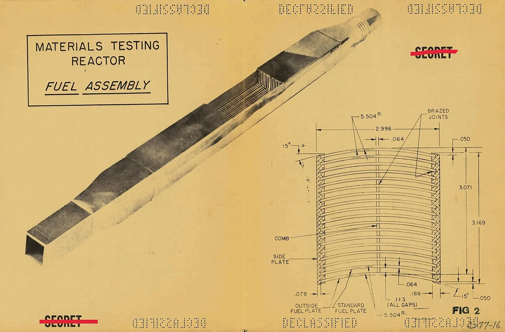
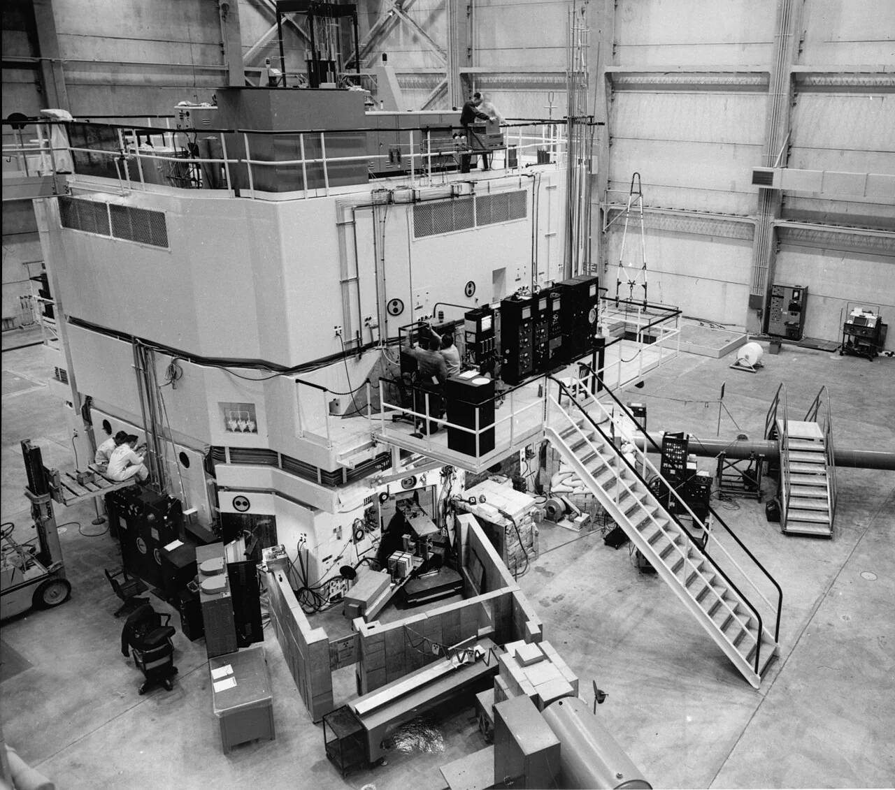
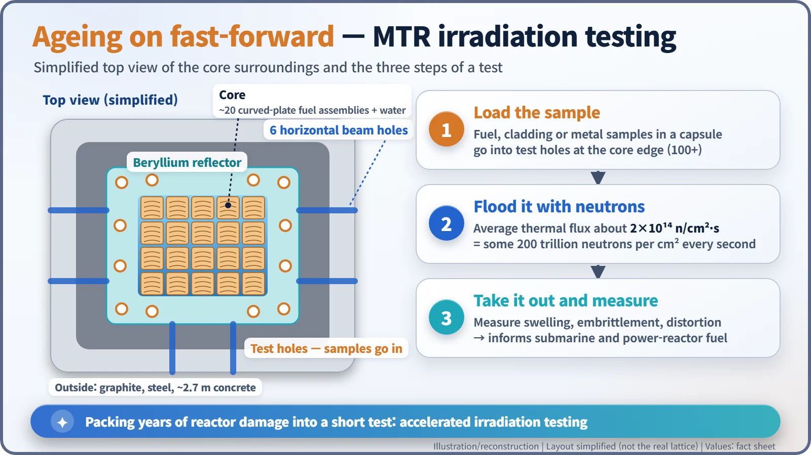
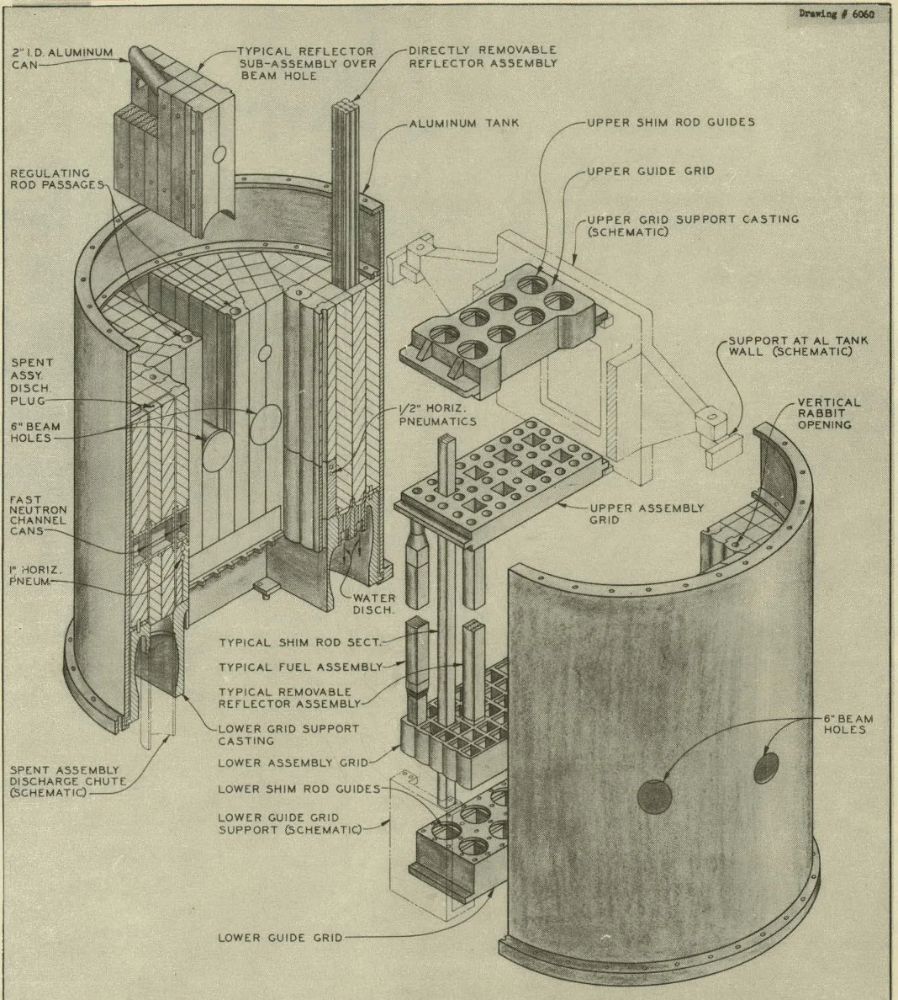
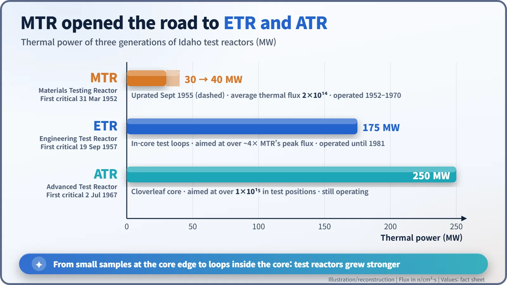

Nuclear History · 141
The Reactor That Aged Other Reactors' Fuel — the Materials Testing Reactor (1952)
A 30-megawatt water-cooled reactor that made no electricity, but packed years of neutron damage into short tests and led to the ETR and ATR.
The Materials Testing Reactor in Idaho first went critical on 31 March 1952. It made neither electricity nor plutonium; its job was to flood samples of fuel and metal with neutrons, roughly 2×10¹⁴ per square centimetre per second, so that years of reactor damage could be studied in a short time. Its curved-plate fuel and its successors, the ETR and the still-operating ATR, shaped how reactor fuel is tested to this day.
A secret drawing of curved plates
Picture a yellowed engineering drawing. In one corner the word SECRET has been struck through in red, and rows of punched DECLASSIFIED stamps run along the top and bottom edges. It is dated 15 June 1950. It shows a long, slim metal box, and in its cross-section a stack of thin plates like the pages of a book. Oddly, every plate is gently curved. This was fuel for a reactor that would make neither electricity nor bomb material. So why all the care, and all the secrecy?

A question to ask before you build
After the Second World War, the United States suddenly had plenty of jobs for reactors. The Navy wanted nuclear submarines, the Air Force dreamed of a nuclear-powered bomber, and plans for power reactors multiplied. All of them ran into the same wall. Fuel and metal inside a reactor change under long exposure to neutrons: they swell, they harden and turn brittle (embrittlement), and they warp. Nobody could send a submarine to sea on materials whose behaviour after decades was a guess.
The answer was to age them in advance. Just as a carmaker puts a new part on a punishing test rig to simulate years of driving in a few weeks, you can bombard a sample with an intense stream of neutrons and pile up, in a short time, the damage that would take years in a working reactor. This is accelerated irradiation testing. The key number is the neutron flux: how many neutrons pass through one square centimetre each second. [1]
Wigner's water reactor goes to the desert
The idea took shape in 1944 at the Clinton Laboratories in Oak Ridge, Tennessee, and serious planning was under way by about 1947. The leading designer was Eugene Wigner (1902–1995), who spent 1946–47 as the laboratory's research director. Instead of the early concepts, a 50-kilowatt homogeneous design and then a heavy-water core, he proposed a 30-megawatt core cooled and moderated by ordinary water. Oak Ridge and Argonne National Laboratory near Chicago shared the design work. [3] [2]
Then came the question of where to put it. Because of its high power, the Atomic Energy Commission's safety committee worried about fission products escaping in an accident, so instead of Argonne's site near Chicago the reactor went to the remote National Reactor Testing Station in the Idaho desert. Meanwhile, Oak Ridge built a full-scale mock-up to check the design. In 1950 Alvin Weinberg (1915–2006) persuaded the Commission to load it with real fuel and run it as a small reactor in its own right; a story often told says Wigner called it the "poor man's pile".
Construction in Idaho began in May 1950 and finished in February 1952, with design and building running almost in parallel. The budget was $40 million, and Phillips Petroleum Company operated the plant for the Commission. [4]

The secret of the curved plates
Now for the drawing's puzzle. MTR fuel was a thin plate of uranium-aluminium alloy, enriched to 93% uranium-235 and clad in aluminium. On the drawing each plate is about 1.3 mm (0.050 in) thick, with water channels of about 2.9 mm (0.113 in) between plates. Close to twenty plates made one assembly (sources give 18 or 19), and the core held roughly twenty to twenty-five assemblies.
Water rushing between the plates carried the heat away and at the same time slowed the neutrons so they would cause more fissions. Thin, tightly packed plates let a small core shed a lot of heat and so produce a lot of neutrons. The catch is that thin plates tend to buckle. That is why the Oak Ridge team curved them from the start: just as a sheet of paper stiffens when you bend it into an arc, the curve resists buckling. A beryllium reflector surrounded the core to bounce neutrons back, and about 2.7 m of concrete formed the outer shield.
The result was an average thermal neutron flux of about 2×10¹⁴ neutrons per square centimetre per second: some 200 trillion neutrons through a fingernail-sized patch every second, 10 to 100 times more than other reactors of the day. As a 2021 report from Idaho National Laboratory puts it, "For years, MTR was the highest neutron flux research reactor in the world." The curved-plate fuel is regarded as the model for the fuel of many research reactors today. [1] [2]

31 March 1952, and 15,000 experiments
The MTR first went critical on 31 March 1952 and reached full power on 22 May. Idaho National Laboratory describes it as "mankind's first nuclear reactor for testing materials" — the laboratory's own phrase, best read with the Oak Ridge mock-up reactor in mind. The first experimental sample went in on 2 August 1952. [5]
Around the edge of the core were more than 100 test positions, plus six horizontal beam holes and pneumatic and hydraulic "rabbit" tubes that shot samples in and out. Here engineers tested fuel forms for the naval propulsion programme, materials for the nuclear bomber project, and fuel for the Savannah River production reactors and prototype power reactors. One common misunderstanding: the MTR did not test whole submarine reactors. It irradiated small samples of fuel and materials; the submarine prototype was a separate facility at the same Idaho site. [1] [4]

Power was raised to 40 MW in September 1955. In 1958, according to the laboratory, the MTR became the first water-cooled reactor to run on plutonium-239 fuel, showing that a plutonium core could be controlled too (some sources may differ on the year). Over its life the reactor hosted more than 15,000 irradiation experiments. [2] [5]
A lineage that outlived it
The MTR ended regular operation on 23 April 1970. It ran one last time for 48 hours that August, for a study of mercury contamination in wildlife, and never restarted; the building was demolished in 2011. By then the baton had long been passed. The Engineering Test Reactor (ETR), first critical on 19 September 1957, ran at 175 MW and put experiment loops inside the core. The Advanced Test Reactor (ATR), first critical on 2 July 1967, runs at 250 MW with a cloverleaf-shaped core and is still operating today. [1] [2]

| Reactor | First critical | Thermal power | Operated |
|---|---|---|---|
| MTR | 31 Mar 1952 | 30 MW, 40 MW from Sep 1955 | 1952–1970 |
| ETR | 19 Sep 1957 | 175 MW | 1957–1981 |
| ATR | 2 Jul 1967 | 250 MW | 1967–today |
In the shadow of glamorous power stations and submarines stood a reactor whose job was to age other reactors' fuel ahead of time. The years it lived through on their behalf helped the others be designed more safely.